Raised between San José and Río Claro. No hormones, no antibiotics. Delivered refrigerated to your kitchen — or your restaurant's pass.
Scroll to reveal the anatomy. Click any cut to explore its flavor profile, best cooking methods, and chef's notes.
Click any cut on the diagram
to explore its profile.
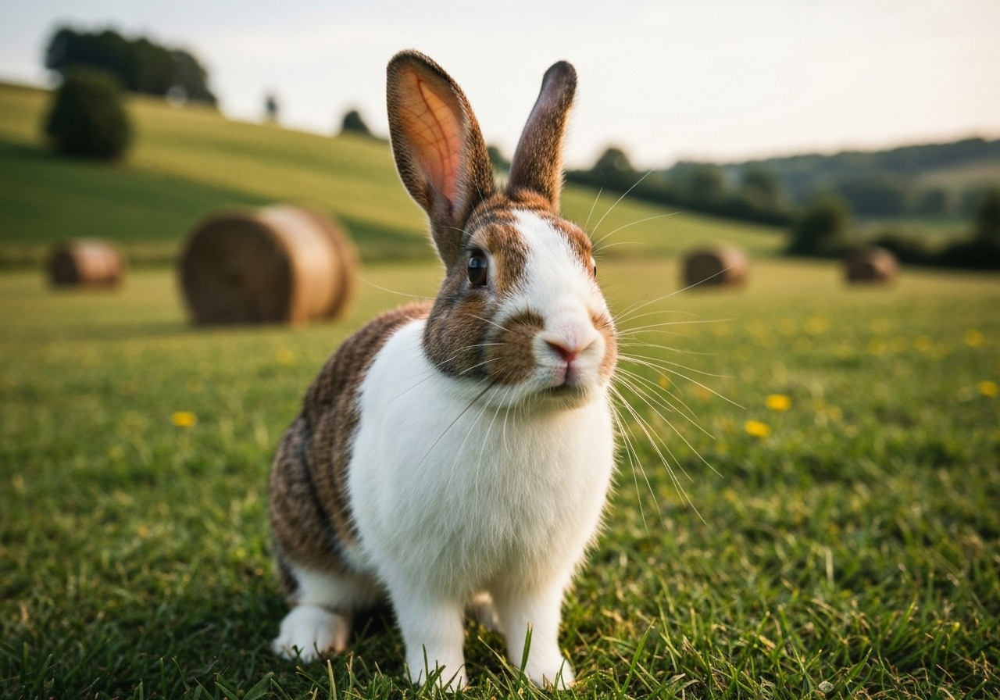
Tender, lean and delicately flavored. Ideal for stews, ragùs and gourmet preparations at home or on your menu.
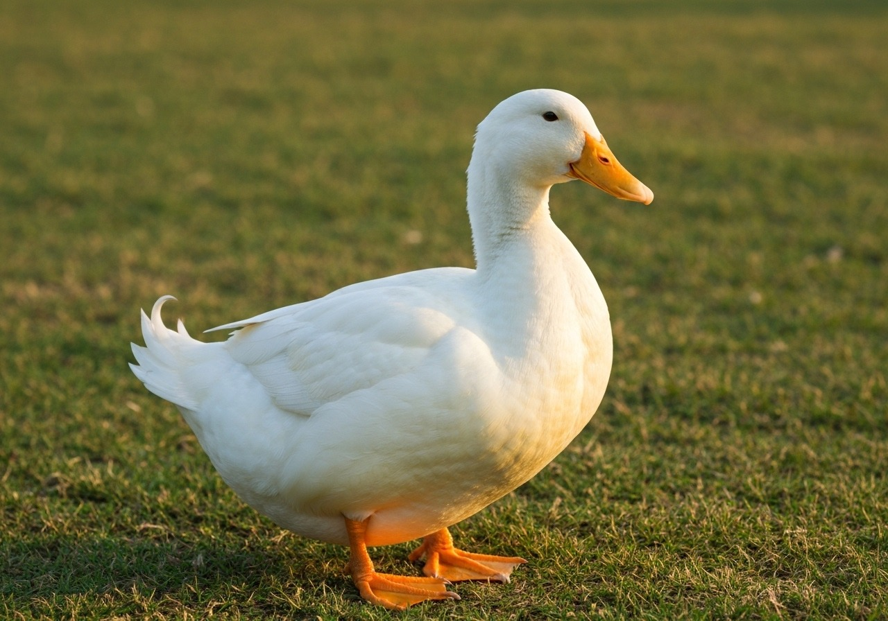
Pasture-raised duck with high-quality fat and rich, intense meat. Perfect for confit, magret and chef-driven plates.
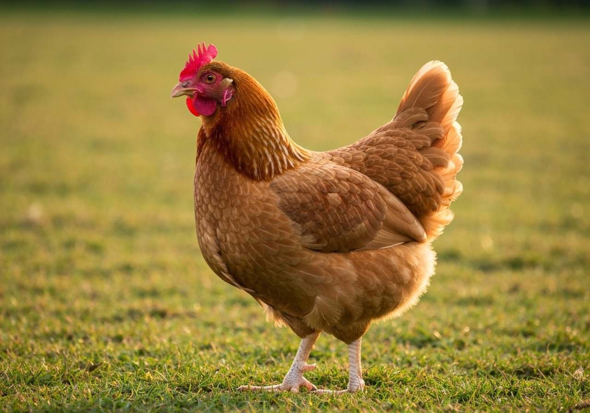
Naturally grown chicken — juicy and flavorful, thanks to our farms in San José and Río Claro.
Our animals are raised naturally, on pasture, without growth promoters or preventive antibiotics — ever.
San José and Río Claro share the same protocols, the same care, and the same commitment to quality.
Vacuum-packaged and delivered at controlled temperature. From our farm to your door without compromise.
Every portion is standardized. Restaurant kitchens rely on us because our product behaves the same every time.
Juliet's Organic Meats supplies rabbit, duck and organic chicken to restaurants across San José, the GAM and the Southern Zone. Standardized cuts, consistent gram weights, punctual deliveries.
Discover the Restaurant ProgramSelect individual cuts, family boxes, or tell us what your restaurant needs. Order online or message us on WhatsApp.
We coordinate day and time based on your location — GAM, San José, or the Southern Zone near Río Claro.
Vacuum-packed, labeled and delivered refrigerated. Open the box and it goes straight to your kitchen.
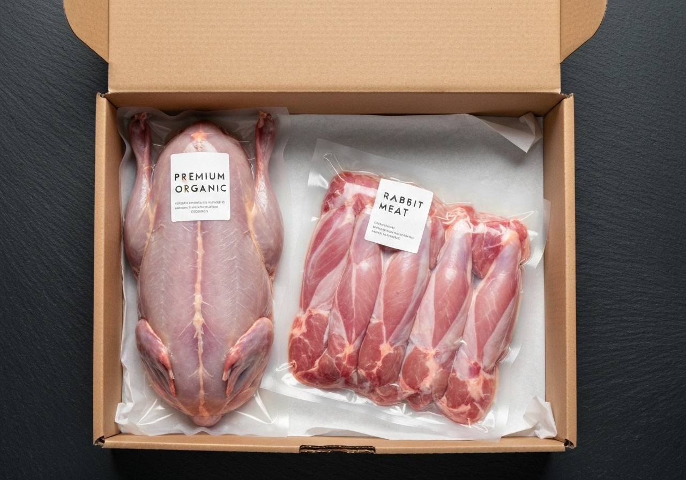
A weekly introduction to Juliet's quality. Chicken, rabbit or duck — your choice. Perfect for two.
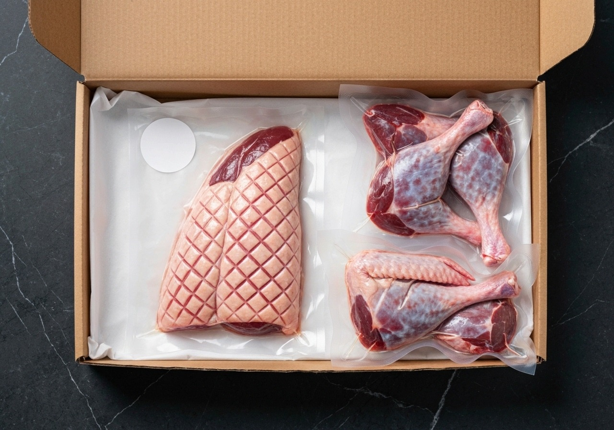
Three proteins, portioned for a family of four. Chicken thighs, duck legs, rabbit portions. Recipes included.
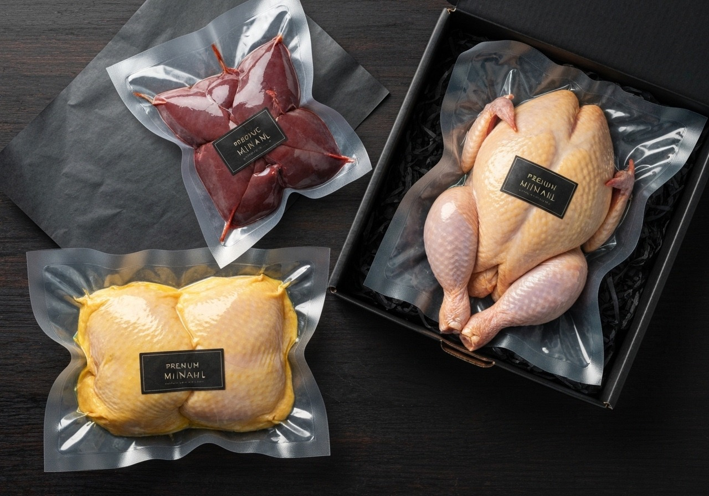
Premium cuts selected by our team — the saddle, the magret, the whole bird. For serious home cooking.
San José · Río Claro · Criado en Pastizales Abiertos
Juliet's Organic Meats was born from a desire to offer more honest, more flavorful meat. Between San José and Río Claro we raise rabbit, duck and chicken on open pasture — caring for the land and the animals that live on it.
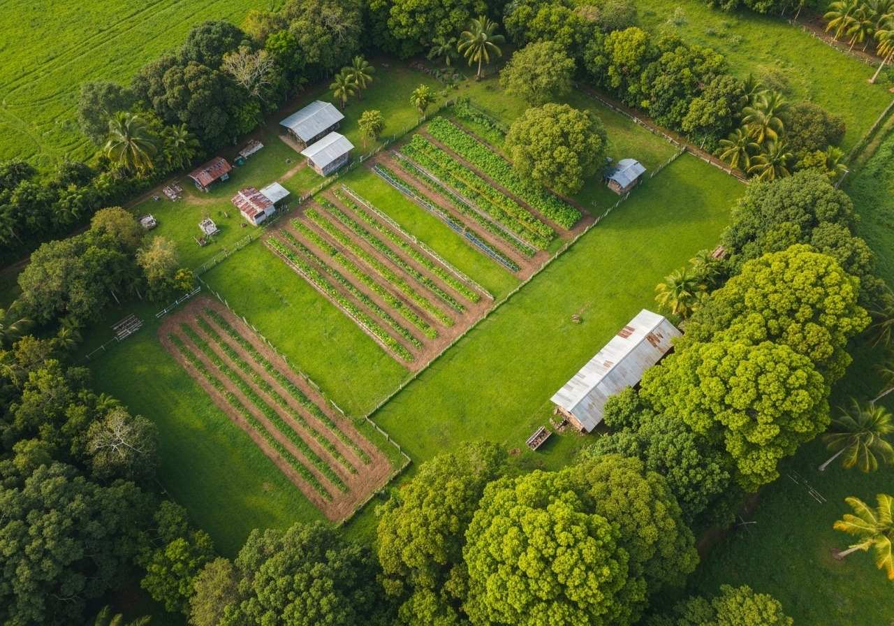
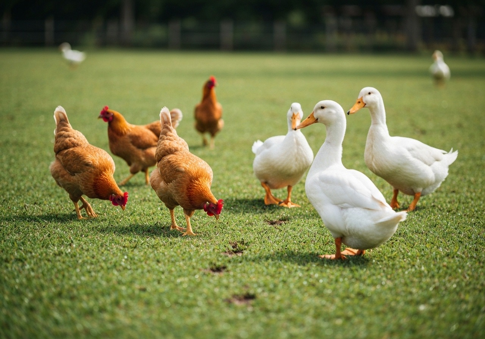
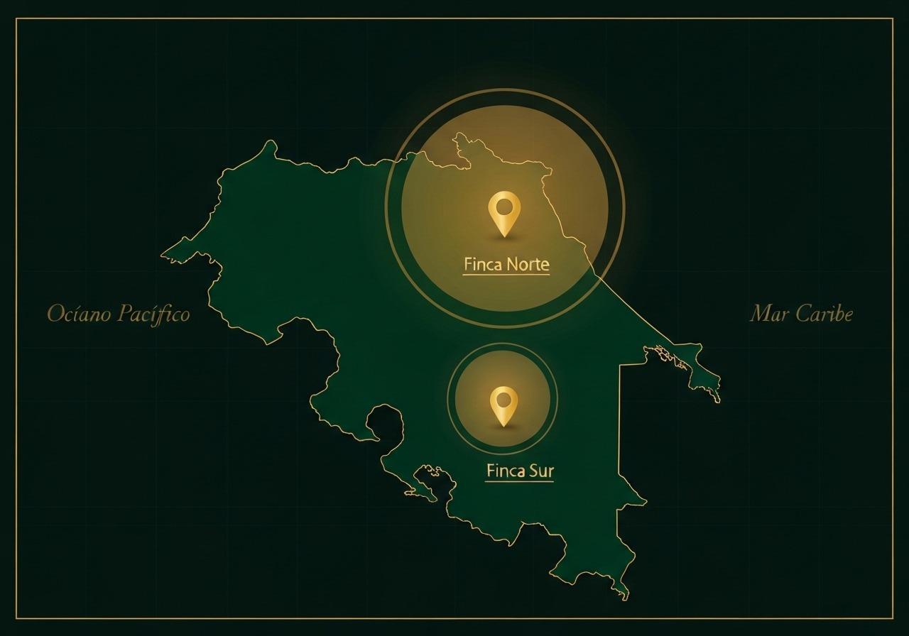
San José supplies the Greater Metropolitan Area. Río Claro serves the Southern Zone and Osa. Both farms operate a direct refrigerated cold chain — no third-party handling, no compromise on temperature.
Every breed we raise was chosen for a reason. Not yield alone — flavor, texture, fat distribution, and temperament on pasture. These are the animals behind the cuts.
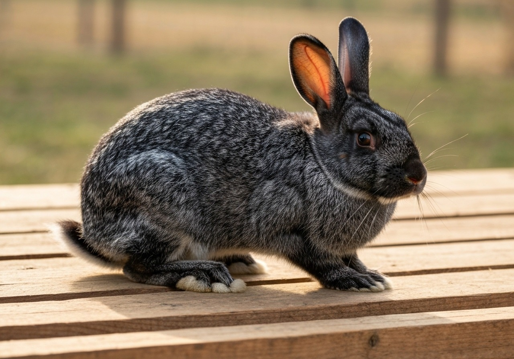
A heritage American breed — jet-black coat, exceptional meat-to-bone ratio. Dense, fine-grained muscle with mild, clean flavor that absorbs braising liquid beautifully. The saddle is prized by Costa Rican fine-dining chefs.
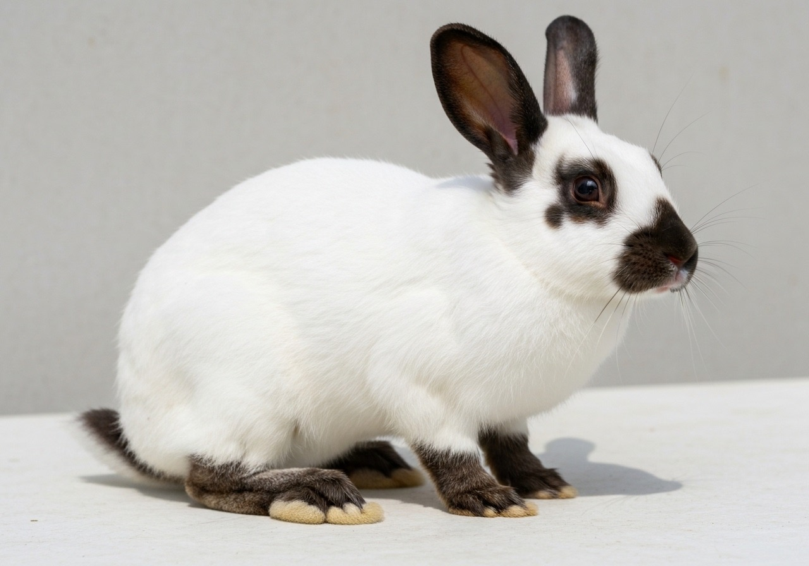
White body with distinctive dark points — the commercial standard for a reason. Broad hindquarters, deep loin, consistent portion weight. Mild and versatile: performs equally in rustic braises and refined restaurant preparations.
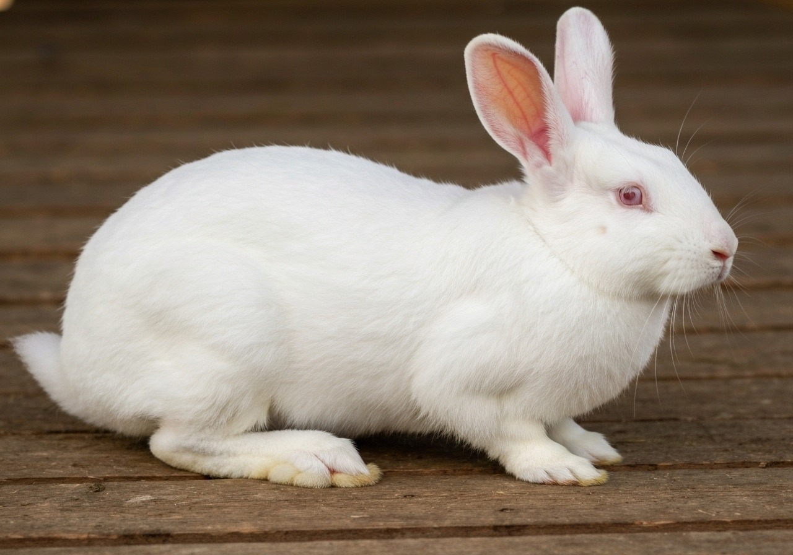
The largest of our three rabbit breeds — pure white, heavily muscled hindquarters, dense chest. Produces the highest yield per carcass. The legs are ideal for long confit; the loin, sliced, plates like veal. A workhorse breed with gourmet results.
Two breeds, two flavor profiles. The Pekin delivers a generously fatted breast that lacquers brilliantly at high heat — the magret every fine-dining kitchen wants. The Muscovy, native to Central America, runs leaner with a complex, veal-like depth prized by serious kitchens.
Slow-grown on open pasture in Río Claro — no confinement, no growth hormones. The result is a bird with genuine flavor: tight muscle, golden skin that crisps properly under dry heat, and dark meat that holds up to braising without falling apart. What chicken is supposed to taste like.
Slow-braised rabbit legs in white wine, thyme and garlic. Three hours of patience that rewards completely.
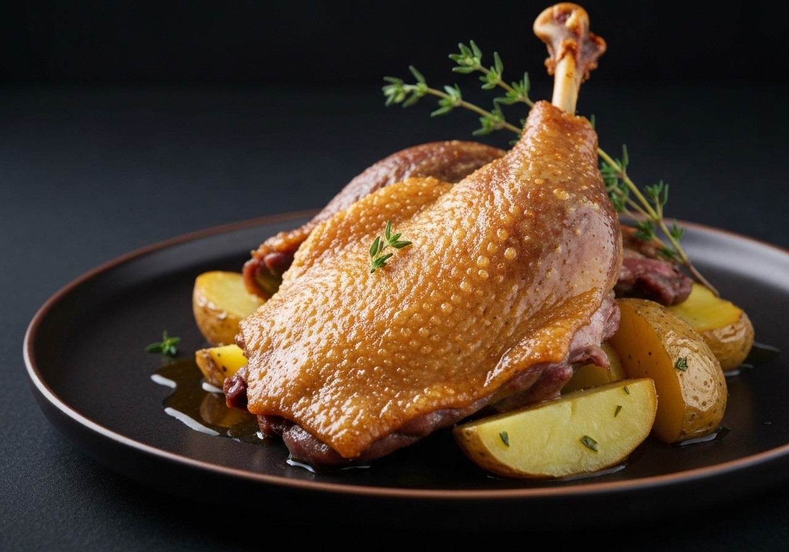
Classic French confit method. Duck legs cured in salt and thyme, then submerged in their own fat for 12 hours.
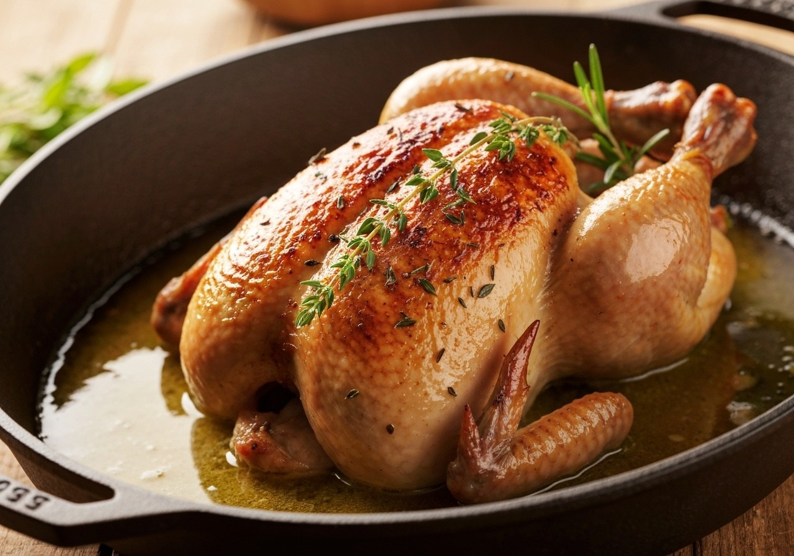
A whole Juliet's chicken, herbed butter under the skin, roasted at high heat. Simple done perfectly.
Subscribe to receive offers, recipes, and news from our farms in San José and Río Claro.